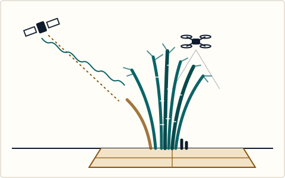

In brief
Bamboo (kawayan) grows fast, is harvested often and supports rural livelihoods. Rewarding growers for the carbon their bamboo holds would first require measuring it credibly and cheaply. This proposed project asks whether free satellite imagery, collected across seasons and calibrated with measured field plots, can estimate how much bamboo biomass an area holds, and whether low-cost drone images add anything. It would report uncertainty openly and would not issue or certify carbon credits.
The real-world problem
Bamboo is a strategic crop in Samar. In 2023 the provincial government and its partners announced a large-scale bamboo planting program, with a target of tens of thousands of hectares. Climate finance could one day reward the growers who manage these stands, but only if someone can show how much carbon a bamboo area holds and how that changes over time.
Measuring that from the ground everywhere is expensive. Satellites are cheap to use at scale, but most remote-sensing research on bamboo biomass studies Moso bamboo in China, a temperate species that spreads by running rhizomes. The bamboos expected in Samar are tropical clumping species, which grow, are harvested and look different from above. The literature review for this proposal did not identify a Philippine field-calibrated satellite study of their biomass.
The scientific question
Does multi-temporal Sentinel-1 radar plus Sentinel-2 optical imagery improve above-ground biomass estimates for Philippine tropical clumping bamboo over a single-date, optical-only baseline, and what extra value, if any, do low-cost drone canopy measurements add?
Two applied questions build on that estimate:
- How can carbon be represented fairly when growers selectively cut mature culms, so that estimates neither over-count stock after harvest nor under-count documented regrowth?
- Can an automated pipeline turn these estimates into reports that state their uncertainty and their boundaries clearly enough for expert review?
Proposed approach
- Field plots as the reference. Around 20 to 30 non-destructive plots, measured with a forestry co-investigator from a Samar-based university, recording species, culm age, harvest history and management.
- Three comparisons, fixed in advance. A single-date optical baseline; multi-temporal radar plus optical; and radar plus optical plus drone canopy metrics. The same model family, labels and validation folds are used throughout, so differences can be attributed to the inputs.
- Seasonal field campaigns. Three visits timed to dry season, shooting season and post-harvest, subject to weather and safety in a typhoon-exposed region.
- Uncertainty from every source. Measurement, allometric equations, carbon fraction and model error carried through to every reported number.
- Harvest-aware accounting. Results reported as standing stock at a date and estimated change over the observed period, never as annual sequestration or creditable removals.

Methods in more detail, for specialists
Models. Gradient-boosted regression as the main model family, with an interpretable linear model as a secondary benchmark. Deep learning is not part of the plan: with tens of plot-level labels a defensible deep model is unlikely.
Metric and decision rule. Normalized RMSE as the primary metric, with MAE alongside. The margin that counts as a meaningful improvement is registered after the field biomass range is known and before any model is fitted. Interval width and empirical coverage also inform the decision.
Validation. Spatially blocked, plot-grouped hold-out; leave-one-site-out reported only as a transfer stress test. The plot, not the pixel, is the effective sample unit. Feature sets are small and pre-specified; tuning is nested inside training folds.
Plots. Default 20 m × 20 m plots aligned to the Sentinel-2 10 m grid where feasible, with documented fallbacks for irregular stands. Culm diameter at 1.3 m; culm height on a systematic subsample; drone canopy height is never treated as culm height. Expected species are Dendrocalamus asper and/or Bambusa blumeana, to be confirmed at inception.
Uncertainty. Monte Carlo propagation with each error source represented once; allometry and carbon fraction follow explicit hierarchies from locally validated equations down to generic defaults, which are used only for sensitivity analysis.
Harvest attribution. Change is attributed to harvest or regrowth according to the reliability of the harvest record: documented, grower-recalled, observed stumps, inferred or unknown. Validation in the funded period would focus on documented harvest events; regrowth estimation is exploratory.
Reporting. Reports would be structured around selected observable-data requirements of Verra's VM0047 methodology (v1.1), listing the fields they do not populate. This is pre-certification decision support, not a compliance or near-compliance system.
Intended outputs
If the project goes ahead, it is designed to produce:
- A documented Samar bamboo benchmark pairing satellite data with field plots, released openly where permissions allow, with sensitive site information access-controlled.
- A field-validated biomass model and its evaluation, or a rigorously documented null result if the extra inputs do not help.
- A harvest-aware accounting method and a prototype reporting tool.
- A reproducible pipeline, and training so partner staff can rerun it.
- At least one peer-reviewed paper submitted.
Who might benefit
- Forestry and remote-sensing researchers, through a Philippine benchmark and a tested method for clumping bamboo.
- Provincial and local planners and bamboo-industry partners, through maps and estimates for screening and prioritization.
- Growers and cooperatives, through clearer, explained information about their stands. This does not imply any carbon income.
- Carbon-project developers and validators, who remain responsible for certification, through transparent upstream estimates.
Status and limitations
- This is a proposal. Funding, partner agreements, field permissions and sites are not yet confirmed.
- It is a one-year pilot in Samar. National generalization is future work.
- The drone is photogrammetric, not LiDAR, so it sees the canopy surface rather than individual culms. Its value is tested, not assumed; the project stands on satellite and plot data alone if it adds little.
- Below-ground carbon would appear only as a labelled sensitivity range. Soil carbon, carbon in bamboo products, additionality, leakage, permanence and credit issuance are out of scope.
- If site access or plot numbers fall short, the project would narrow to a single-site methods study.